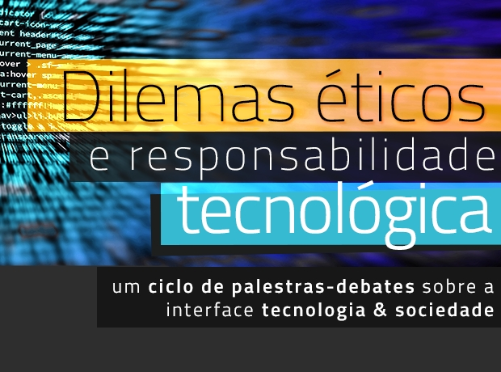
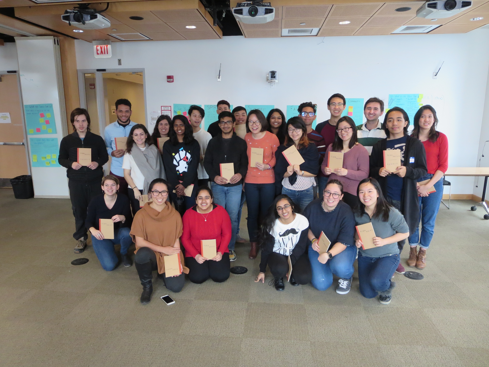
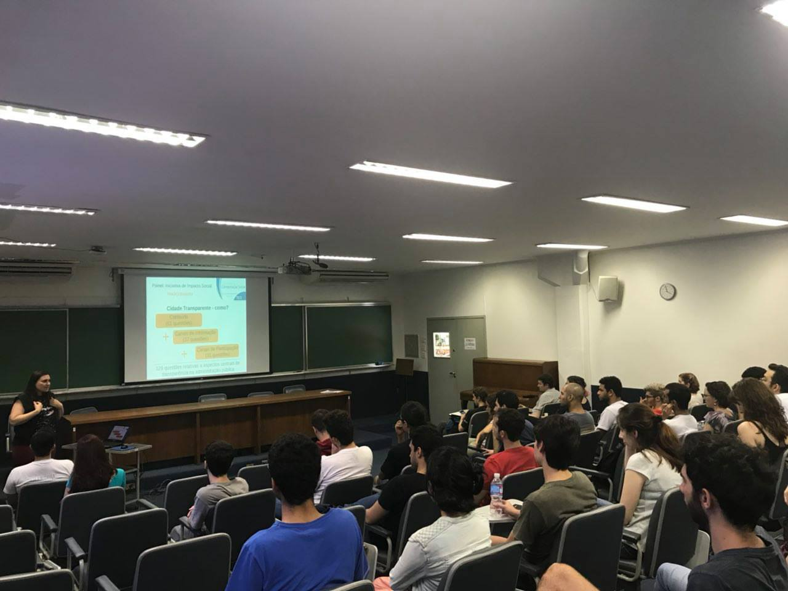

O Tecs é um grupo de extensão universitária, iniciado por alunos do Bacharelado em Ciência da Computação da USP, focado no impacto social da computação e da tecnologia. Ele é parte do TechShift, uma aliança global de organizações estudantis com esse mesmo propósito.
O grupo é constituído por três frentes de desenvolvimento — educação, ética e serviços. Elas visam, respectivamente, promover a educação tecnológica igualitária da população por meio de cursos, oficinas e ações promovidas pelo grupo; unir esforços para formar uma sociedade e profissionais éticos e conscientes sobre o uso da tecnologia; e estimular alunos a usarem a tecnologia para solucionar problemas da comunidade local.

Realizeramos, neste primeiro semestre de 2018, um ciclo de palestras-debates com o intuito de discutir para discutir temas tão atuais quanto necessários sobre responsabilidade tecnológica. Confira a programação e participe!

Em janeiro de 2018, dois membros nossos participaram do TechShift Summit, em Chicago, com membros de grupos de outras dez universidades. Saiba como foi!

Nosso primeiro evento realizado foi a Semana de Computação Social, em novembro de 2017. Leia mais sobre as palestras e debates.